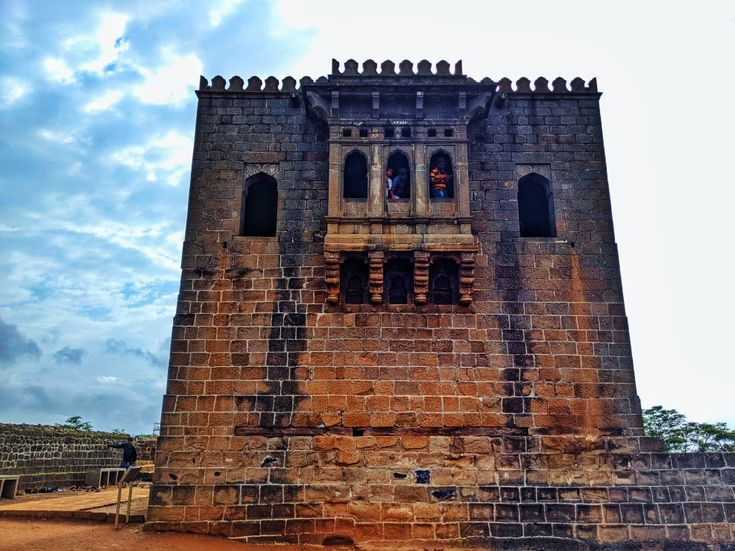

Shivneri Fort (known as Killa) (Marathi pronunciation: [ʃiʋneɾiː]) is an ancient military fortification located near Junnar in Pune district in Maharashtra, India. It is the birthplace of Shivaji, the founder of Maratha Kingdom.
In 2021, it was added to the tentative list of the UNESCO World Heritage Committee as part of "Serial Nomination of Maratha Military Architecture in Maharashtra".
Historical Significance
Shivneri got its name as it was under the possession of the Yadavas of Devagiri. This fort was mainly used to guard the old trading route from Desh to the port city of Kalyan. The place passed on to the Bahmani Sultanate after the weakening of Delhi Sultanate during the 15th century and it then passed on to the Ahmadnagar Sultanate in the 16th century. In 1595, a Maratha chief named Maloji Bhosale, the grandfather of Shivaji Bhosale, was ennobled by the Ahmadnagar Sultan, Bahadur Nizam Shah and he gave him Shivneri and Chakan. Shivaji was born at the fort on 19 February 1630, and spent his childhood there. Inside the fort is a small temple dedicated to goddess Shivai Devi (some accounts gives us information that name shivaji came from the name of the fort i.e. Shivneri), after whom Shivaji was named.
Architectural Features
Shivneri Fort is a hill fort having a triangular shape and has its entrance from the South-west side of the hill.Apart from the main gate there is an entrance to the fort from side called locally as the chain gate, where in one has to hold chains to climb up to the fort gate. The fort extends up to 1 mile (1.6 km) with seven spiral well-defended gates. Inside the fort, the major buildings are the prayer hall, a tomb and a mosque.
At the centre of the fort is a water pond which is called 'Badami Talav', and to the south of this pond are statues of Jijabai and a young Shiva. In the fort there are two water springs, called Ganga and Yamuna, which have water throughout the year.
Best Time to Visit
The best time to visit Shivneri Fort is during the winter months (November to February), when the weather is cool and comfortable, making it perfect for trekking and exploring the fort's historical significance.
The monsoon season (June to September) offers lush greenery and a refreshing atmosphere, but the trails can be slippery, so caution is needed.
Avoid visiting in the summer (March to May), as the heat can make the trek challenging. For the best experience, plan your trip in winter or early monsoon for pleasant weather and scenic views.
Location
Shivneri Fort is located near the town of Junnar in the Pune district of Maharashtra, India. It is situated approximately 94 km from Pune city and lies within the Sahyadri mountain range.
Kusur, Junnar, Maharashtra 410502.